Creating, Editing, and Deleting a Row Template
Use the Row Template Manager to create, edit, and delete row templates. The tasks in creating a new row template are:
- Defining Row Template Name and Placement Grid
- Defining Row Parameters
-
Defining Component Types and Rails
Defining Row Template Name and Placement Grid
To define a row template and placement grid, with the Row Template Manager open:
- Click the Edit tab.
-
Click New to generate a new unique row template name, which, by default, is RowTemplateN, where N = 1, 2, 3, … You can modify this default value to specify a more descriptive name for your row template.
To edit an existing row template, select its name from the drop-down list.At any point, click Update to save changes. Click View to preview the row template in a separate window. Whenever you make changes to a row template and click Update, the rows in the design and the view in the placement window are dynamically updated. The Update and View buttons are disabled when there are invalid entries in the table. Incorrect entries are indicated by yellow highlights. You can hover the mouse over the entry to get a detailed explanation of the error. -
Specify the row Template Period. It is the sum of the heights of all rows in the template and the spacing between these rows. In other words, it is the distance after which the template repeats.
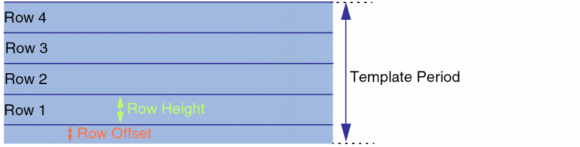The combo box beside the Template Period field specifies the number of rows that can be accommodated in the specified row template period. If you modify the number, then the Template Period is adjusted accordingly. For example,4*0.048indicates that the Template Period is four times the vertical grid's period (0.048). Therefore, the Template Period field is automatically reset to0.192to accommodate the vertical grid. - Specify the Region Type, which is a RowRegionSpec (RRS) type attribute from which settings are inherited. After generating the row region in the layout canvas, Virtuoso can automatically query the RRS type attribute, derive the predefined actions, and run these actions on the new row region.
-
The Placement Grid section ensures that row placement is compatible with the Width Spacing Pattern/Snap Pattern (WSP/SP) tracks. In this section:
- Optionally, select the vertical and horizontal reference grids (along the x and y axes) for snapping the devices during placement.
- Optionally, specify the vertical and horizontal offset values, which indicate the reference row offset values that need to be applied to rows on each axis after they are snapped to the reference grids. The offset value is a correction factor for the SP.
- Optionally, select a Related Snap Pattern, which is a predefined grouping of snap pattern definitions (SPDef) and width spacing snap pattern definitions (WSSPDef). If you choose a Related Snap Pattern, a corresponding WSP region that is equivalent to and in addition to the row region is created.
Defining Row Parameters
Use the Rows section to specify row parameters.
-
Add a row by editing the default placeholder for the first row in the Row Information table.
When you edit the row, a placeholder for the next row is automatically added. This way, you can create a list of rows to be included in the row template.
You can also right-click a row to display the following shortcut menu.
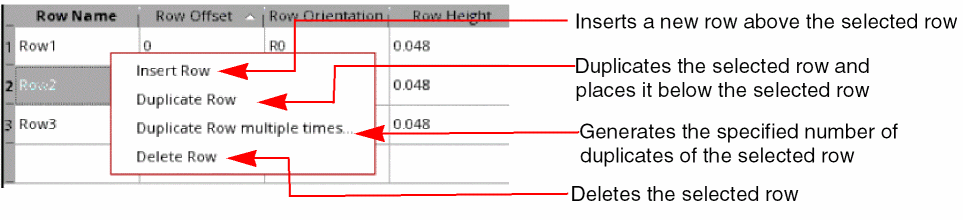 - Edit the Row Name, if required.
-
Specify the row offset from the base of the template. For the first row, the default value is
0, which you can edit. Row offsets must be greater than or equal to zero and less than or equal to the template period.
Instead of specifying absolute values, select Auto-compute row offset to automatically calculate and update the row offsets whenever rows are modified, for example, when a row is added, duplicated, or deleted. The offsets of all rows in the template are re-calculated and updated such that they are next to each other, without any overlaps. The row offset calculation is also done when the row height or offset values are modified.
You must ensure that the Row Offset values adhere to the Template Period and Row Height values. An example of an error condition is given below.
If Auto-compute row offset is selected, the row offset values are automatically adjusted such that rows are created next to each other, without any overlaps.
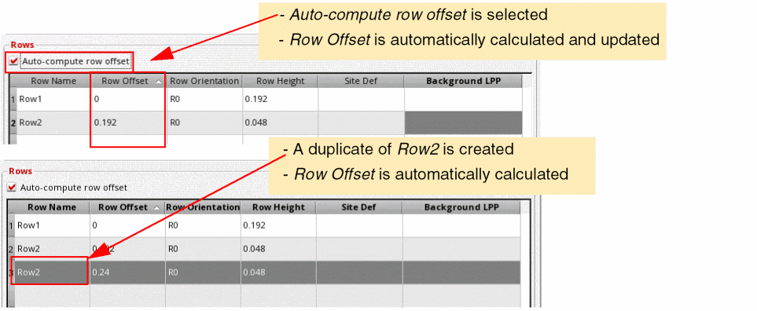 -
Select a Row Orientation. The default value is the current orientation of the row. Valid orientations are
R0(default) andMX(Mirrored about the x axis). -
Specify the row height using one of the following methods:
-
Specify an absolute Row Height value. The default value is the period of the vertical grid or
0if the vertical grid is not set. In the following example, the Template Period is set to0.192and the row template has a single row of height0.192.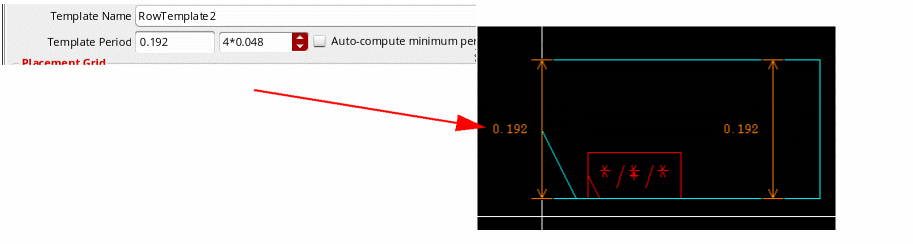On adding a new row to the above definition, the Template Period value is highlighted, indicating that the end of the row exceeds the Template Period value. Therefore, the row is partially or fully outside of the template. In such situations, select the Auto compute minimum period to automatically calculate a minimum template period value. -
Select a Site Def. Row Height is overridden by the row height value of the siteDef. The Inst Pitch value is also reset to the width of the siteDef, which you can further edit. Standard cells snap to the site defined in the siteDef.
The following figure depicts the differences between the siteDef height and row height values: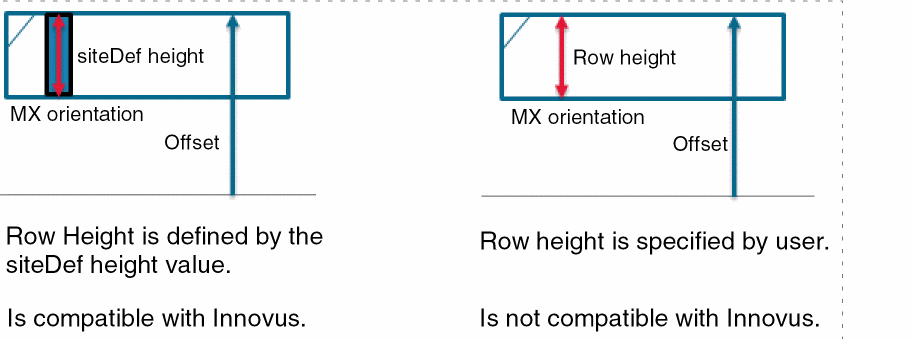
-
Specify an absolute Row Height value. The default value is the period of the vertical grid or
-
Select a Background LPP to fill the given row with a rectangle on the specified layer-purpose pair (LPP). This option is useful when you want to use well layers. You can use either an Nwell row with a Pwell behind it, or a Pwell row with an Nwell behind it. In the following example, an Nwell layer is selected as the Background LPP:
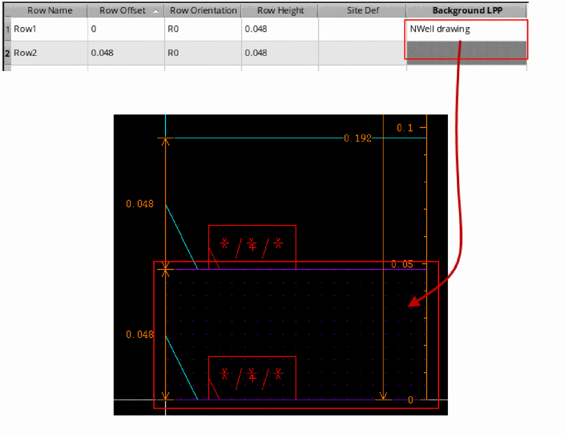A rectangle shape is created in the row, which can be used for placing wells.
Defining Component Types and Rails
Select a row to display its component attributes in the Row Attributes section. Use the options in this section to define the component types and rails.
-
In the Types field, specify the component types that can be placed in the row. These components are defined in the Configure Physical Hierarchy form. Click the Browse button to choose from a list of available component types.
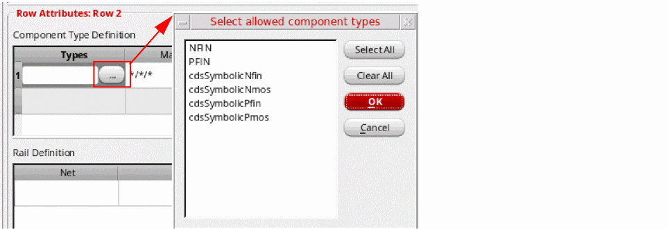 -
If you have not specified component types, specify the device Master. Only the devices belonging to the specified master can be placed in a row. You can specify either a single master cellview or only the
lib,cell, orviewvalue. For example, Master can be set to*/pfinFet/*for a p-type row or*/nfinFet/*for a n-type row. Default is*/*/*. -
Specify the component Orientation. This orientation is applied relative to the Row Orientation specified above. Therefore, if the row orientation is
R0, the component orientation is followed as specified. However, if the row orientation is set toMX(mirrored) and the component orientation is also set toMX, then the devices are flipped twice, and so the resulting orientation isR0. Click the Browse button to select from the list of supported orientations.
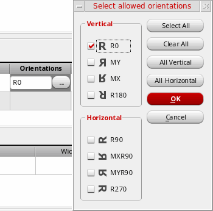 -
Choose an Align Reference, which specifies the row edge to which components need to be aligned. Valid values are
BOTTOM,TOP, andCENTER.
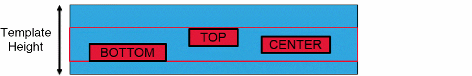 -
Specify an Align Offset value, which specifies the distance from the Align Reference edge that the components can be placed. In the following example, Align Reference is
BOTTOMand Align Offset is0.48. So, the component is placed at the specified distance from theBOTTOMedge.
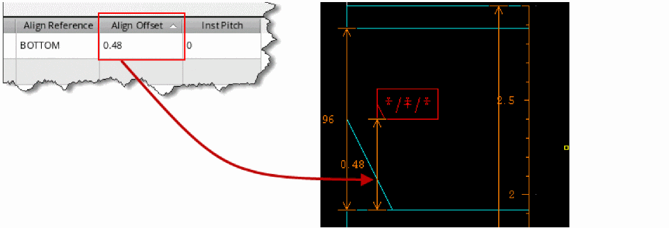 - Specify an InstPitch value, which is the minimum distance between instances of the same component in a row.
- Use the options in the Rail Definition section to generate rails in the selected row. Specify the Net that defines the rail connectivity. Select the LPP on which the rail is drawn and specify the rail Width.
- Select a WSP track based on which the rail layer, width, and offset values must be set. WSP Track lists all WSP tracks available within the template period range.
-
In the Align Reference field, specify the reference edge for aligning the rail in relation to the row. Valid values are
TOP,BOTTOM, andCENTER. -
Specify the Align Offset, which is the distance of the rail from the reference edge (Align Reference) specified above. Align Offset is automatically set to BOTTOM if a WSP track is selected.Depending on your need, you can sort rows based on their Rail Width, Align Reference, or Align Offset values. Here is a quick look at a design with rail definition: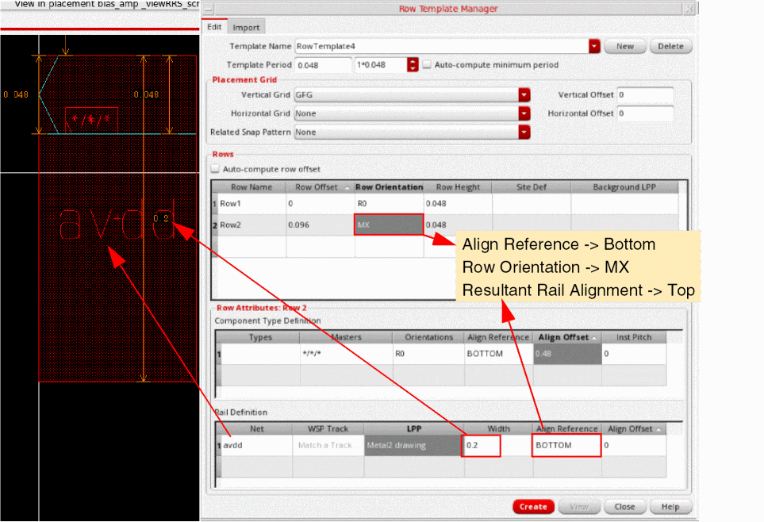
After creating row templates, use the Placement Planning form to generate rows in the layout canvas. For digital designs, you can use the Placement Planning form to create rows without selecting a row template, and then use the options available on the Row tab to specify how the rows should be created. Alternatively, you can select the required row template from the Row Template drop-down list and choose on the Region tab the required placement options. This second method helps achieve greater precision required in advanced node designs.
Deleting a Row Template
To delete a row template, select the required row template in the Template Name list and click Delete.
Related Topics
Importing a Row Template from Another Cellview
Return to top